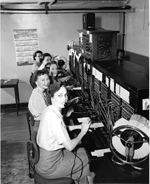

Allô ?
Allô ? is a game I developed during the Ludum Dare 36. The theme was Ancient Technology.
Posted on December 02, 2018 · minutes read
Allô ? is a game I developed during the Ludum Dare 36. The theme was Ancient Technology. It's a very interesting theme, I had to think about old things, look at history documentaries, articles and wonder what would make a good game. In this game, the player is a switchboard operator.
 Switchboard operators. Taken from Wikipedia.
In the early days of telephony, through roughly the 1960s, companies used manual telephone switchboards, and switchboard operators connected calls by inserting a pair of phone plugs into the appropriate jacks.
When a person wants to call a second one, a colored warning light turns on, on both persons' jacks. Then the player connects them by plugging phone plug in both jacks. The lights turn white, and persons are now talking. At the end of the conversation, lights turn off, the player gains points and the phone plug can be used again. If the conversation is cut, the player doesn't gain points. The player should hurry up, because persons won't wait forever to make their call (lights blink faster and faster until the persons leave the call). If three conversations are missed, the player is fired (life's hard).
As I didn't have a 2D artist, I made graphics (yeah I call that graphics) and the menu (i'm really sorry about this one). However, It was a real pleasure to create musics, and sound effects (especially the persons' voices).
You can download the game or play directly in your web browser here.
And you ? What would you have done with this theme ?